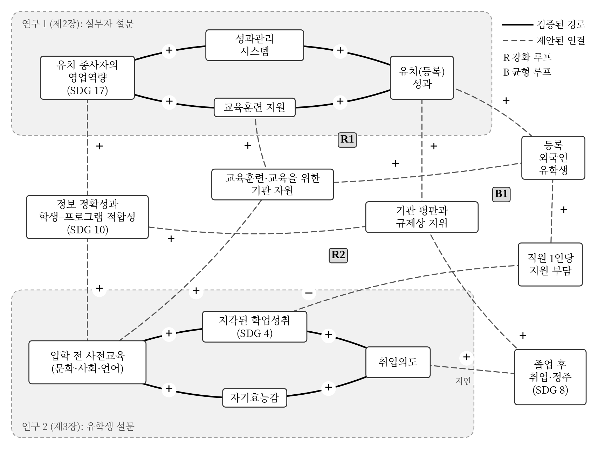

1
유치 역량과 성과
다섯 가지 영업역량은 성과관리 시스템과 교육훈련 지원을 통해 유치성과와 어떻게 관련되는가?
연구 1 · 제2장유치 종사자의 영업역량과 외국인 유학생의 학업성취 및 자기효능감 — 두 편의 실증 연구를 하나의 서비스 흐름으로 묶고, 유엔 지속가능발전목표(SDGs)에 비추어 읽습니다.
핵심 경영상의 문제는 책임의 연속성입니다. 대학, 유학원, 교육기관, 학생은 서로 다른 단계에서 서로 다른 조건 아래 움직이고, 단계가 넘어갈 때마다 정보의 질과 책임의 명확성이 그다음에 일어날 일을 좌우합니다.
제1장 §1.1 (pp. 1–3); 제3장 §3.2 (p. 53) — 교육부 (2023, 2025)
앞의 두 목적은 실증 연구, 세 번째는 간접 경로 검토, 네 번째는 메커니즘 기반 관점·시스템 관점·윤리경영·AI를 통한 통합입니다.
다섯 가지 영업역량은 성과관리 시스템과 교육훈련 지원을 통해 유치성과와 어떻게 관련되는가?
연구 1 · 제2장문화·사회·언어 영역의 입학 전 사전교육은 지각된 학업성취 및 자기효능감과 어떻게 관련되는가?
연구 2 · 제3장두 매개변수를 거쳐 사전교육에서 취업의도로 이어지는 경로 가운데 어느 것이 실증적으로 지지되는가?
연구 2 · 제3장두 연구의 증거를 SDG 4, 8, 10, 17에 비추어 읽을 때, 책임 있는 경영에 어떤 시사점을 주는가?
제1장 · 제4장 · 제5장제1장 §1.2 연구 목적 (pp. 15–17); §1.3 논문의 구성 (p. 18)
두 연구 모두 횡단면 설문조사이며 확인적 요인분석(CFA), 구조방정식 모형(SEM), 부트스트랩 매개효과 검증으로 분석했습니다. 표본 크기가 같은 것은 우연입니다.
| 연구 1 · 제2장 | 연구 2 · 제3장 | |
|---|---|---|
| 응답자 | 유치 실무자 334명 대학 직원 186명 · 유학원 종사자 148명 | 입학 전 사전교육을 받은 외국인 유학생 334명 회수 400부 |
| 자료 수집 | 2025년 12월 – 2026년 2월 | 2026년 6월 29일 – 8월 7일 |
| 독립변수 | 영업역량의 다섯 차원 의사소통 · 문제해결 · 고객관리 · 관계구축 · 환경대응 | 문화적응 · 사회적응 · 언어적응 교육 |
| 매개변수 | 성과관리 시스템 · 교육훈련 지원 | 지각된 학업성취 · 자기효능감 |
| 종속변수 | 유치(등록) 성과 | 한국 내 취업의도 |
| 분석 방법 | CFA, SEM, 부트스트랩 매개효과 검증 | CFA, SEM, 부트스트랩 매개효과 검증 |
제1장 §1.3, 표 1.1 (p. 19); §2.5.3 (p. 34); §3.5.1 (p. 67)
영업역량과 유치성과 사이에 두 조직 변수 — 성과관리 시스템과 교육훈련 지원 — 가 놓여 있습니다. 관계구축이 두 매개변수 모두에 대해 가장 큰 계수를 보입니다.
95% 부트스트랩 신뢰구간(5,000회 재추출) 기준. 역량은 조직 메커니즘을 통해 작동합니다.
| 역량 | 성과관리 경유 | 교육훈련 지원 경유 |
|---|---|---|
| 의사소통 | 0.138 | 0.087 |
| 문제해결 | 0.097 | 0.097 |
| 고객관리 | 0.118 | 0.041 (n.s.) |
| 관계구축 | 0.129 | 0.101 |
| 환경대응 | 0.097 | 0.063 |
제2장 §2.6.2, 표 2.7 (pp. 39–40); 그림 2.1 (p. 30); §2.6.3, 표 2.8 (p. 41); §2.7.1–2.7.3 (pp. 42–46)
입학 전 사전교육은 문화적응·사회적응·언어적응의 세 영역입니다. 모형 적합도는 양호합니다 (CFI = .963, RMSEA = .043). 지각된 학업성취는 자기평가이며 행정상의 성적이 아닙니다.
여섯 개의 특정 간접효과 중 네 개가 유의합니다 — 가설 H9는 부분적으로 지지됩니다. 점은 간접효과, 선은 95% 신뢰구간이며 0을 지나면 유의하지 않습니다.
제3장 §3.6.3, 표 3.5 (pp. 71–72); 그림 3.1 (p. 62); §3.6.4, 표 3.6 (pp. 72–73); §3.7 (pp. 74–77)
메커니즘 기반 관점(SER-M; Cho & Lee, 1998; Cho, 2014): 성과는 주체(S), 환경(E), 자원(R)이 메커니즘(M)을 통해 어떻게 결합되는가에 달려 있습니다. 연구 설계 이후 해석의 틀로 적용했습니다.
각 연구는 한 방향의 모형을 추정하지만, 서비스 시스템에는 피드백이 있습니다. 두 연구를 잇는 변수는 정보 정확성과 학생–프로그램 적합성입니다.

유치성과 → 등록 유학생 → 기관 자원 → 교육훈련 및 교육 → 성과.
교육 → 학업성취·자기효능감 → 취업의도 → 졸업 후 취업 → 평판과 규제상 지위 → 유치. 여러 해가 걸린다.
학생 증가 → 직원 1인당 지원 부담 증가 → 학업성취 약화. 성장에는 한계가 있다.
제1장 §1.1, 표 1.2 (p. 7), 표 1.3 (p. 14), 그림 1.1 (p. 11), pp. 6–12; 제4장 §4.3, 표 4.2 (p. 90)
측정된 영향이 아닌 개념적 연결입니다. 세부목표 16.6(책임 있는 제도)은 윤리경영의 전제 조건으로 언급합니다.
세부목표 4.3, 4.4, 4.7
연구 2는 사전교육과 지각된 학업성취를 측정한다.
세부목표 8.5, 8.6
학업성취와 자기효능감은 취업의도와 관련된다.
세부목표 10.7
정확하고 접근 가능한 정보와 지원은 책임 있는 이동의 일부이다.
세부목표 17.17
연구 1에서 관계구축의 계수가 가장 크다.
제4장 §4.2 (pp. 86–88), 표 4.1 (p. 87); §4.6, 표 4.6 (p. 99), 표 4.7 (p. 100); United Nations (2015)
유학생 유치는 정보 비대칭 아래의 교환입니다. 기관이 인원수에 보상을 주면 인원수를 얻게 됩니다. 그래서 윤리경영을 선언문이 아니라 하나의 경영 시스템으로 다룹니다.
예상되는 변화
위험
권위 있는 어조로 제시되는 잘못된 비자·등록금 안내; 편향; 프라이버시
조건
중대한 결정에 대한 사람의 검토. 두 설문 어디에서도 검증하지 않았다.
제4장 §4.4, 표 4.3 (pp. 92–95); §4.3 (p. 91); §4.5 전략 6–7 (p. 96); 제5장 §5.1 (pp. 106–107)
계수는 기술적인 것이며 비용 효과성의 척도가 아닙니다. 기관을 위한 출발 가설이며, 환경이 다르면 가중치도 달라집니다.
윤리 기준, 역할 명확화, 환경 탐색 — 이후 모든 단계가 정보의 질을 물려받는다.
성과 평가 (β = 0.435)를 교육훈련 (β = 0.373)보다 먼저 — 등록 목표를 높이기 전에 갖춘다.
언어적응을 먼저 (β = .284; .216), 사회·문화 내용을 결합한다.
동의 기반 인계와 재학 중 지원. 학업성취가 세 영역 모두를 매개한다 (.029 ~ .068).
학업성취와 자기효능감에 대한 상담; 확인된 진로 현황을 의도와 구분해 기록한다.
범위를 한정한 AI 시범 운영; 루프와 지표의 주기적 점검.
제4장 §4.5 경영 전략 (pp. 95–98), 표 4.5 (p. 98); 표 4.4 (p. 97)
경영적 시사점: 성과는 주체, 환경, 자원을 어떻게 결합하느냐에서 나옵니다.
사전 준비부터 졸업까지 학생을 추적하고, 각 학생을 유치 기관과 연계
유치 파이프라인, 직원 역량, 지원 수용력, 평판의 저량–유량 모형
윤리 풍토, 목표 압박, 수수료 구조를 조절변수로 설정
다국어 안내, 학문 목적 한국어 연습, 편향 감사를 갖춘 조기 경보 모형
졸업생 추적 조사; 출신국·경로별 접근성; 학생 성과로 평가하는 파트너십
제5장 §5.2, 표 5.1 (p. 108), pp. 107–110; §5.3 (pp. 110–112); 제4장 §4.7 (pp. 103–104), 표 4.8 (p. 102)